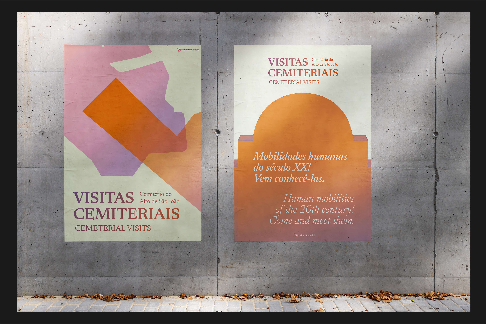

Visitas Cemiteriais
- 2022
- Editorial Design
- Graphic Design
- Communication
Cemetery Visits is a project developed within the scope of the seminar on Comunicação e Valorização do Património Arqueológico, taught at the Mestrado de Arqueologia da Universidade Nova de Lisboa, by student Andreia Graça.
The Alto de São João Cemetery is one of the main cemeteries in Lisbon. Its historical, artistic and social importance places it on the map of the heritage complexes that allow an understanding of human societies, from 1833 to the present day.
The Cemetery Visits will be activities at the Alto de São João Cemetery, where the burials of 20th century migrants will be presented.
